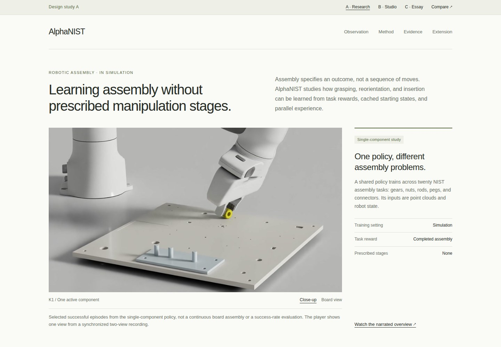
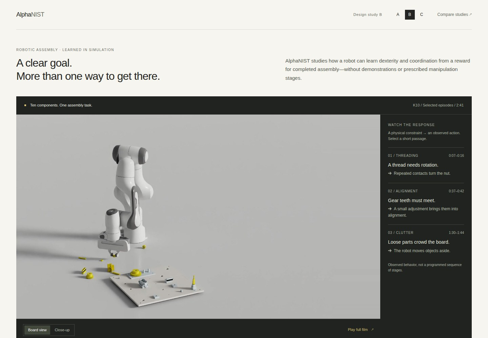
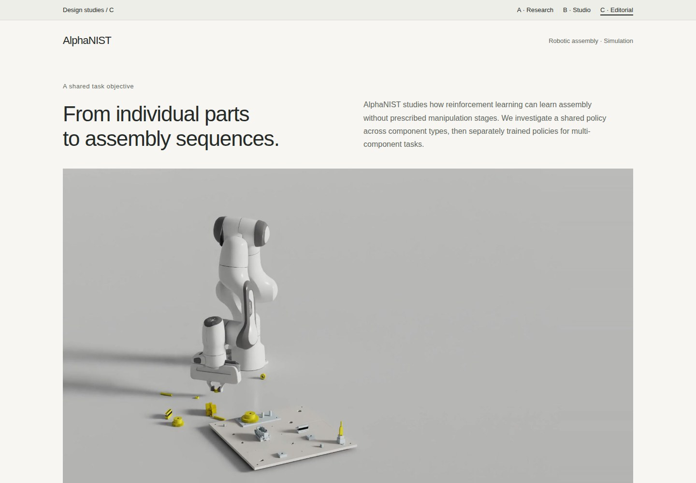

A
Research-first
The question, learning setup, and measured comparisons lead. Demonstrations make the results concrete.
Explore A ↗Working previews for the AlphaNIST project page. Each uses the existing research and footage, with a different editorial structure. The main page is unchanged.

The question, learning setup, and measured comparisons lead. Demonstrations make the results concrete.
Explore A ↗
Start with the robot. Selected moments direct attention to the constraints and the observed responses.
Explore B ↗
A guided progression from local manipulation to the learning setup, evaluation, and multi-component sequences.
Explore C ↗Which opening makes you want to keep reading? Which makes the research easiest to understand and trust? The structure, typography, and interactions can be combined; these are directions to choose between, not final releases.